· 正 · 文 · 来 · 啦 ·
我很喜欢给圆圈兄弟讲《我是霸王龙》这本书。
每次给他们读的时候，都是声情并茂地读着，绝不敷衍。
坦白讲，我每次读到最后，声音都哽咽了。
是的，看哭的那个人是我，一位87年的中年老母亲。
而且是被一只那么丑的霸王龙给虐哭了。
看哭的人当然还有圆圈兄弟。
尤其是看到霸王龙哭泣的表情，最后孤零零地坐在小翼龙曾经待过的悬崖顶上时...
他们就红着眼睛抬头看着我，扑到我怀里...
“妈妈，霸王龙好孤单啊！”
“妈妈，小翼龙为什么飞走了，不理霸王龙了！”
于是，我们母子仨抱成一团，对着封面上那只粗暴可怕的霸王龙集体哭。
不知道的还以为我们被吓哭了，其实是我们母子仨都玻璃心，共情太深，被霸王龙虐到心都碎了！
圆圈兄弟哭，大概是觉得霸王龙太孤单了，没有朋友。
而我哭是因为，霸王龙虽可怕却有一颗温暖细腻的心，他爱得太彻底了，总是让人忍不住替他心疼，替他难过…
我在想，等我到了80岁，我依然会很爱着这个故事。
这本书启蒙了圆圈兄弟共情能力。
霸王龙的眼泪似乎有一股神奇的力量，这股力量在他们哥俩那颗尚未开发的内心世界里种下了一颗名叫“善良”的种子。
宫西达也，这位大神，真是众多小读者肚子里的一只蛔虫，深谙儿童的内心世界，不然怎么会创造出那么多经典作品。
难怪有人笑称，每一个喜欢霸王龙的孩子心里都住着一个宫西达也。
“善良与爱，希望与梦想”是他不断书写的最大动力，难道不也是我们家长所要追求的吗？
宫西达也的恐龙系列绘本共有7册，《我是霸王龙》是圆圈兄弟接触宫西达也“温柔恐龙”系列作品的第一本书，当时他们2岁。
看到他们对恐龙绘本的读后感那么强烈，我在图书馆陆续借来了另外6本书给他们看。
让我非常意外的是，圆圈兄弟每看一本都会哭，而且是久久无法平静下来那种，真让我哭笑不得！
如此调皮捣蛋的两熊孩子看到悲伤哭泣的霸王龙，居然像个小女娃一样哭得一把鼻涕一把泪。
尤其是看《你看起来好像很好吃》这本书，看完之后，他们不约而同地说要去找爸爸，顾不得圆圈爸正在洗澡，夺门而入，扑到圆圈爸的怀里大哭：“爸爸，我要爸爸！”
那一刻，我真恨宫西达也，为何不对霸王龙仁慈点，这7本书里描写的霸王龙真的好衰啊。
不是遇上板壳运动、坠海就是遇上火山喷发，所有其他恐龙都躲着他，跟他有交集的恐龙不是被咬死就是各种原因弃它而去了，霸王龙没有朋友，它是孤独的…
即便如此，每次孖仔帮双胞胎教育群有家长问起，孩子适合读哪些绘本，我依然毫不犹豫地推荐宫西达也的恐龙系列作品。
不仅适合孩子看，也非常适合大人看，每一部作品中的每个故事都很感人，就算是大老爷们也能时常被戳到泪点。
有些家长可能会觉得这些作品儿童不宜，因为太伤感了，担心小孩子看了会有阴影。
但如果你能细细品读就会发现，其实每一个不同故事背后都教会了一个简单的道理！
那就是，善良与爱！
圆圈兄弟对恐龙系列绘本的喜爱，不亚于他们婴儿期对奶的痴恋与执着。
随着他们知识面的不断丰富，绘本书籍已经解决不了他们对恐龙的饥渴。
他们中了霸王龙的毒太深了。
深圳的主题公园只要带“恐龙”二字，他们都会趋之若鹜，但依然觉得不过瘾，就只差真恐龙跑出来，他们才觉得，那才叫刺激！
我真恨不得自己是一个拿着扫把的老巫婆，凭空变出一群恐龙，给他们当宠物玩。
当然了，变成老巫婆或者巴拉巴小魔仙有点黄粱一梦，看童话剧却可以美梦成真。
因为这个世界上真有一部大型恐龙主题实景童话剧《你看起来好像很好吃》正在向我袭来！
哇塞！
这么优秀的剧本要是活灵活现地展现在圆圈兄弟的面前，不知道他们是尖叫几声还是痛哭一场！
若各位家长跟我一样被恐龙折磨得不要不要的，就带孩子们去看这部恐龙主题实景童话剧《你看起来好像很好吃》吧！
#故事内容#
白垩纪时代一只孤独的霸王龙在偶然遇到一只刚出生的小甲龙宝宝之后发生的故事。
本来残忍暴戾的霸王龙在结识了这只名叫“很好吃”的小甲龙后，竟然被他的天真及可爱所吸引。
陪着他一起玩耍，一起成长，最终连自己都被改变，成为了一个充满爱心的好爸爸。
#作者简介#
#推荐理由#
★ 宫西达也温馨恐龙故事系列的又一力作，延续以往温馨的主题。
★ 体会对方的感受能使人变得柔软，关心对方时学会如何去爱他人。
★ 该剧于2008年六一被北京儿童艺术剧院改编成儿童剧，登上国家大剧院的舞台。
★ 无论是爱还是善良，都是可以传染的，我就是想通过我的绘本故事让爱和善良传染给无数的孩子们。（宫西达也）
#精彩看点#
整部剧的剧情充满了想象力，十分引人入胜，剧中人物造型也非常可爱。
尤其是小甲龙宝宝“很好吃”，萌萌的形象和天真的性格让小朋友们看完后忍俊不禁。
除了造型的可爱，这部剧的剧情以及人物性格也很丰满。
尤其是对于霸王龙这个萌爸的塑造，在与“很好吃”的相处过程中，他的性格发生了很大的转变，等于是经历了又一次成长。
而这些变化伴随着演员的表演传达给观众，不止小朋友们会觉得有趣，对于大人们也是另一种启发，相信也会引起家长们对于孩子教育方式的进一步思考。
所有的这些再配合上久石让唯美的音乐，绚丽的舞台布景，《你看起来好像很好吃》毫无疑问是一部非常优秀的童话剧。
希望像这样的作品能够更多的为观众所熟知，为国内的儿童剧市场作出更大的贡献。
童年在经典的故事里成长，身临其境的去笑、去感动、去欣赏，将带给孩子一生正能量的影响~
#现场剧照#
#演出历程#
很好吃”的足迹踏遍了大半个中国，带给千千万万的家庭感动与泪水，欢笑与幸福，同时也得到了无数家庭的好评。
一部好剧，
一种情怀，
感恩有你，
一路陪伴！
#观后感#
对于小朋友——可以通过寓教于乐的方式，让小朋友不仅可以看的开心，更能在恐龙世界中，学会“很好吃”的勇气、霸王龙的善良。
对于大朋友——在这里远离生活的压力，在观剧中忘却身份、忘却年龄，回归初心，体验童真。
对于家庭——全家在一起不是简单的你玩我看，或是每人一个iPad，情感没有交集，而应该是亲密无间、一同欢笑的亲子关系。
#演出信息#
☆演出城市▼:
3月9日沈阳—盛京大剧院
3月10日大连—国际会议中心
3月16/17日北京—北京喜剧院
4月13日南昌—江西艺术中心大剧院
4月14日武汉—武汉剧院
4月20日郑州—河南省人民会堂
4月21日石家庄—河北省艺术中心
其他开票城市陆续更新中....
☆演出票价▼：
嗯！有点小贵，而且，对于双胞胎家庭，这票价还要乘以2！（心疼票子...）
莫慌！
凭着孖仔帮育儿家长群的帮主身份，与主办方沟通了下，给大家争取到原票价的八五折！
☟☟优惠8.5折票价如下☟☟
萌萌哒手偶上图所示
#订票事宜#
☆订票方法：
添加圆圈妈微信号sgguy-com，备注《你看起来好像很好吃》，获取8.5折优惠票。
☆发货方式：
付款成功后，1--2个工作日内，实体门票将由主办方包邮直发，也可以凭下单时预留的电话姓名现场取票。
☆客服方式：
对票务信息有任何疑虑，均可以找圆圈妈协助沟通！或拨打官网的咨询电话：400-086-9980
☆其他注意事项:
*演出时常80-90分钟，有十分钟中场休息（以现场时间为准）
*一人一票制，大人小孩都需要凭门票入场
*演出前一周停止邮寄门票，以免丢失延误影响入场，统一现场取票
*因门票属于特殊唯一性商品，一概出票即不退不换
作为儿童剧《你看起来好像很好吃》
每次巡演基本都是满场！
因为它充满童趣和教育意义的故事可以让孩子在欢笑中受益良多，
甚至在感人的片段中，
现场陪伴观看的爸爸妈妈们都十分动容，
如果你需要一场这样“亲子之爱”的教育课堂那就千万别犹豫啦！
-END-
阅读原文

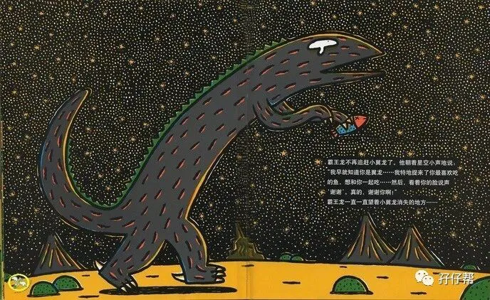
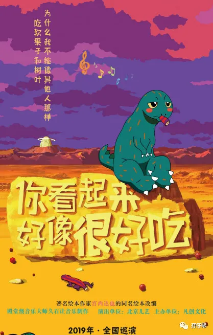
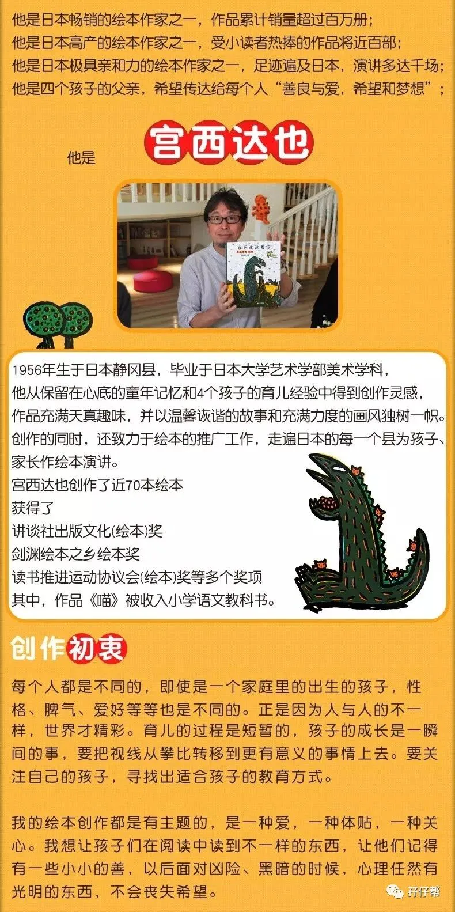
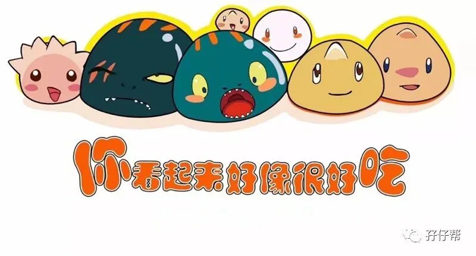
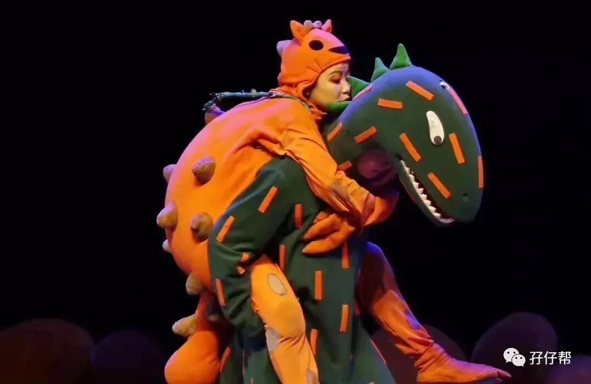
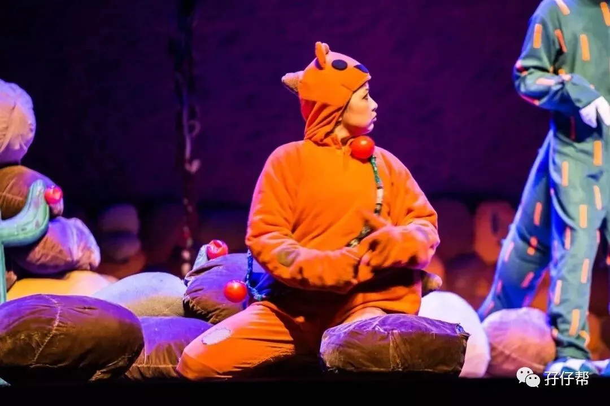
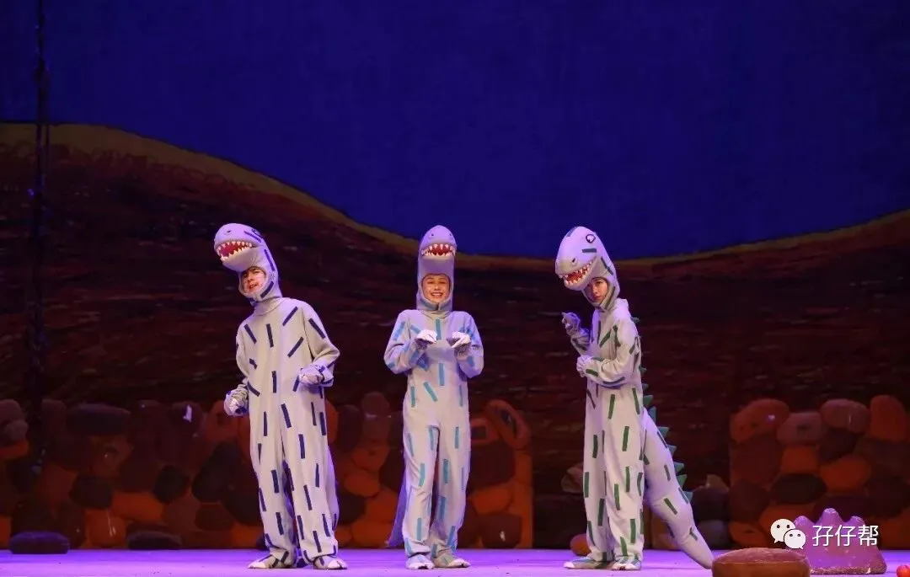
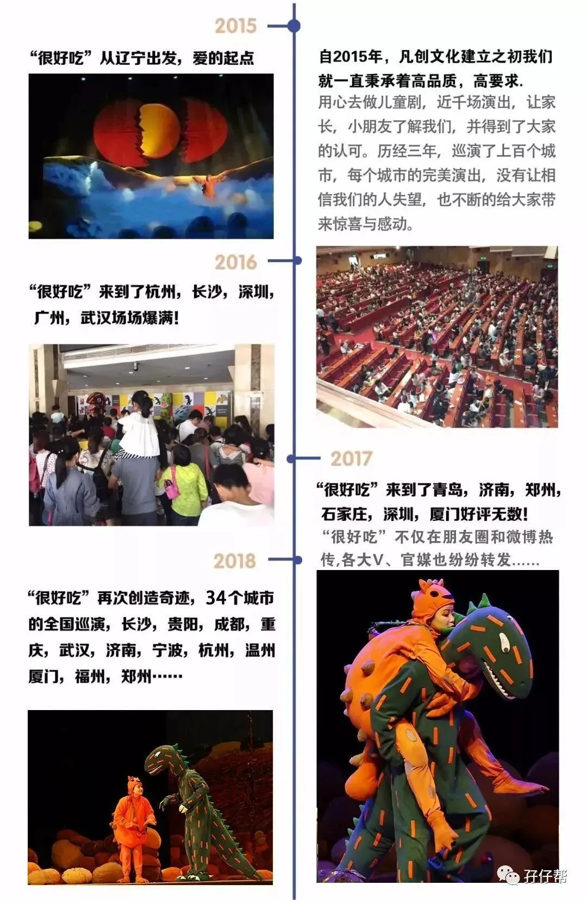
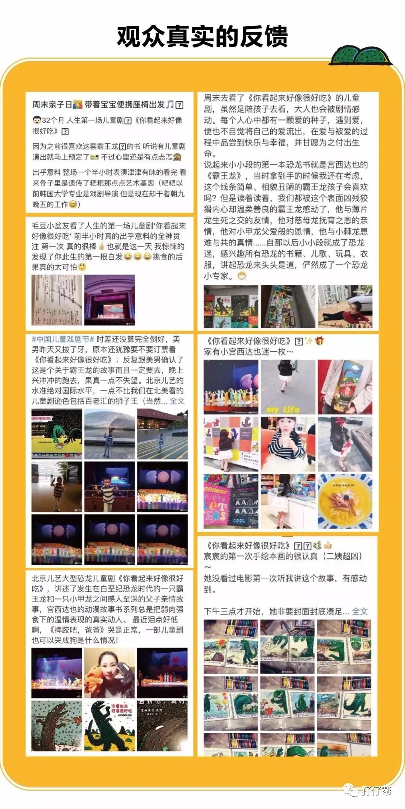
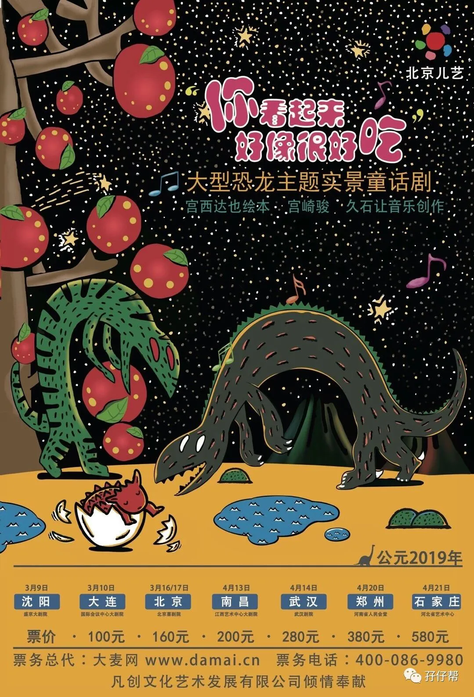
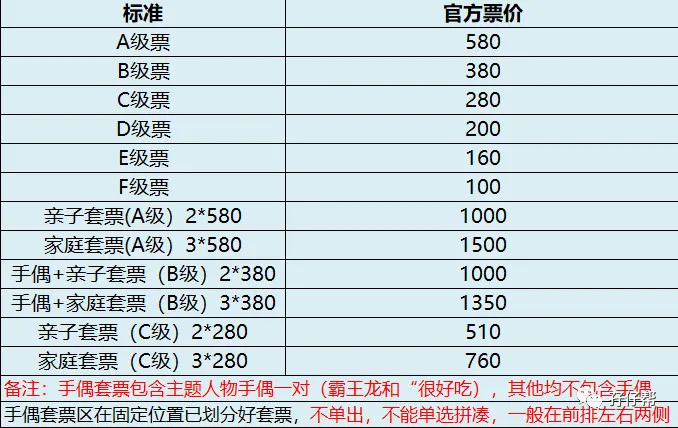
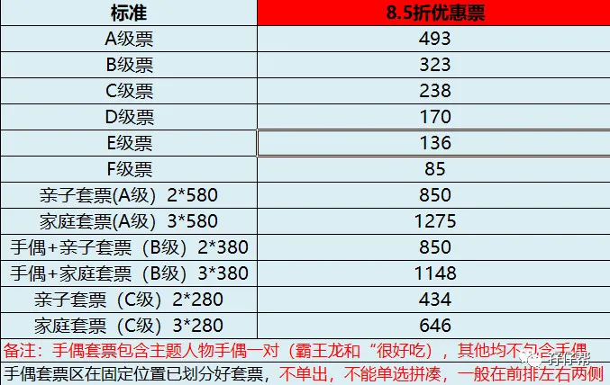
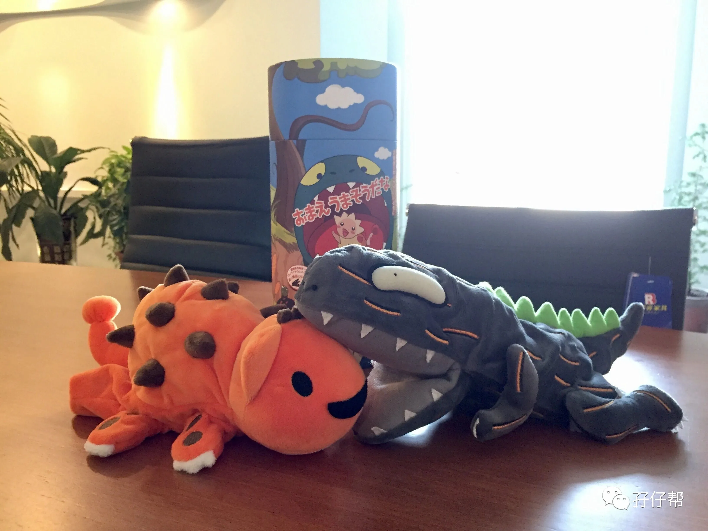